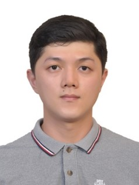

劉地寬
Email：lewdikuannn@gmail.com
國籍：馬來西亞
狀態：在職中進修
個人簡介
我在中研院植物相關單位擔任研究助理。我在碩班和工作常用R套件來分析基因定序資料，也因為使用伺服器認識到Linux語言。平時除了獨自閱讀套件開發文件完成分析，也會幫同事解決一些Python製圖的問題，發現自己具備一定的編程知識和興趣，能夠幫助身邊的人。看了一部分彭彭的Java教學，覺得可以在短時間掌握，也會在網頁搜尋相關的疑問。我覺得唸博班所付出的時間成本非常高，因而思考轉換到工程師的跑道。自己平時在工作和生活懂的獨自解決問題和安排時間，因此想要提供自己一個勇敢嘗試的機會。
R:迴圈、平行運算如lapply
Linux:閱讀套件開發內容，處理工作的任務（分析基因定序資料）
Python:NumPy,Matplotlib
為了成為軟體工程師所做過的努力
- 觀看彭彭的Java教學
- 搜尋關於C#的知識
- 查詢雲端計算的介紹和應用
時間安排
我目前的工作會定期回報自己的工作進度，所以我可以配合一週報告兩次進度的安排。平日上班的早上，上班前我會花費一小時的時間了解背景知識，晚上規劃2個小時完成任務，2個小時學習相關技術。週末二日我會安排10小時的學習時間：2小時背景知識，2小時任務，4小時進行編程練習（LeetCode），2小時思考自己的專案作品內容和方向。
想要加入的公司
我對雲端計算有興趣，覺得公司或組織運用雲端處理資料，未來若是能夠結合人工智能，會是一個很重要的發展領域，所以想要加入像是雲萬里（Cloudmile）這類雲端計算相關的公司。
我曾面對負面情緒的經歷，以及如何處理該情緒
在碩班要補足很多之前沒學好的知識，實驗室的學長施加很大的情緒壓力。我跟家人朋友溝通，是個堅持不懈，充滿毅力的人，並且依靠運動幫助自己梳理思維，緩解壓力。
我在此申請網頁的開發技術心得
我了解到一個html的網頁是由巢狀結構組成，再透過CSS進修排版和設計，未來會繼續加強自己在各個結構上的控制能力，使得畫面更加好看。
我最重要的人際交往原則
從自己出發，誠實的對待身邊的人，是對彼此建立信任最重要的一環。
我的工作經歷
- 中研院 研究助理 （2023至今）
- 新加坡國立大學 生命科學系研究助理 （2021-2023）
我的學歷
- 台灣大學農藝學系 （2018-2020）
- 嘉義大學農藝學系 （2014-2018）